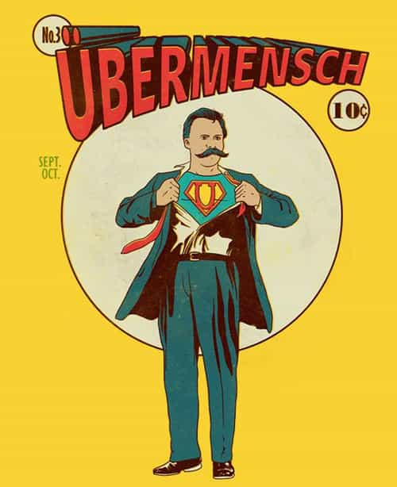
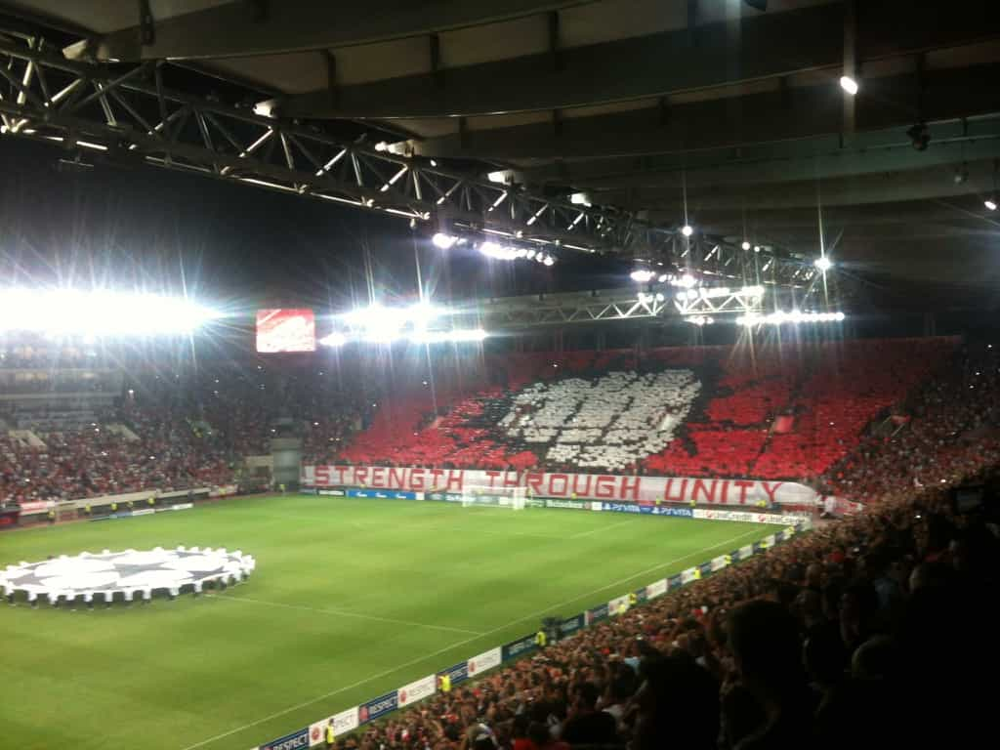

< < < Back
The Two Most Important Psychological Needs Of Men – Return Of Kings
There are only two needs that matter the most to men: the need to belong and the need for appreciation. This should come as no surprise. We are hardwired to be social and to naturally seek connections with others. This connection, however, because of the sheer premise of society comes to us without a struggle.
What happens is that we spend our teens and 20s naturally surrounded by others. School, work, family and other social groups all play their role. Our need to belong and feel appreciated is satisfied, at least to some extent, almost organically. We grow up in these social environments without being even slightly aware of the effect they have on us and the dependency they are imposing on our reality.
I lived the last two years of my life as a digital nomad. I didn’t work for anyone, I didn’t join any office or co-working space and I did most of my work from home. Needless to say that these have been the two most productive years of my life. I was constantly reading and absorbing new knowledge in order to refine my reality and I was constantly trying to find ways to optimize every aspect of my life.
I was becoming the übermensch that Nietzsche was preaching in his writings.

At the same time, however, I was going crazy. During these two years, I changed apartments almost 6 times. I lost many friends because most of them had to be brutally ghosted.
And finally, I struggled to make new friends because I was changing environments often and I couldn’t maintain rapport. While my personal growth soared, my social life slumped.
In 1889, at age 44, Nietzsche suffered a collapse and a complete loss of his mental faculties. He died one year later. Nietzsche wasn’t the most socially adept person. His aversion towards human nature led him to isolation. This isolation, in turn, led him to madness.
As I said before, we are not even slightly aware of the dependency social structures are imposing on our reality. You don’t really have to become a digital nomad to experience that. Most people, when they turn 30, realize that they have lost most of their friends, they struggle to meet new people and most of their relationships are empty and futile.
They experience a tremendous paradigm shift that they weren’t really prepared to handle.
The consequences of this shift are quite brutal. Most of them end up satisfying their need for belonging through toxic relationships they can’t escape from and their need for appreciation through an absurd addiction to social media where they try to expose their lavish, but in reality empty, lifestyles.
The need to belong
The need for humans to belong has always fascinated me. I remember when I was a kid I would go and watch a football game with my dad or my friends and I would feel extremely satisfied afterward.

Regardless of the result, I would really enjoy the fact that I could partake in such a collective event. I was appreciating the fact that a simple event like a football game would allow me to be around “my people” and experience such a rich spectrum of human emotions.
Later on and especially since I started being active on Twitter and different online forums, I saw how much of an impact Internet had in satisfying this incredibly strong need. I saw how thousands of people around the globe are craving to be part of a movement or a tribe and purposely creating what is commonly referred to in the psychology domain as in-group favoritism.
In-group favoritism or in-group bias is a psychological term that describes the tendency of group members to favor the ones that belong to their group over the ones that don’t. This works because we build our self-esteem through belonging, and the presence of someone from an in-group reminds us of that belonging.
I saw how people are exploiting this fundamental need and I also saw how the need to belong can spark revolutions and even lead to the most interesting presidential election the US has probably ever experienced.
Aristotle in his seminal work, “Politics” has even gone so far as to say that:
Man is by nature a social animal; an individual who is unsocial naturally and not accidentally is either beneath our notice or more than human. Society is something that precedes the individual. Anyone who either cannot lead the common life or is so self-sufficient as not to need to, and therefore does not partake of society, is either a beast or a god.
Either a beast or a god…
Social exclusion and its consequences
The opposite of belonging is called social exclusion or ostracism. Ostracism (Greek: ὀστρακισμός, ostrakismos) was a procedure under the Athenian democracy in which any citizen could be expelled from the city-state of Athens for ten years. The name is derived from the ostraka, (singularostrakon , ὄστρακον), referring to the pottery shards that were used as voting tokens. Broken pottery, abundant and virtually free, served as a kind of scrap paper.
Back in 2007, a group of researchers from Florida and San Diego State University, published a study titled: “Thwarting the Need to Belong: Understanding the Interpersonal and Inner Effects of Social Exclusion.” This specific research coined three very interesting findings with regards to social exclusion:
1. Given the importance of social relationships for human survival, the social attachment system may have piggybacked onto the preexisting physical pain system (instead of creating a completely new neural architecture), using pain signals to alert people to the dangers of isolation and thus impel them to maintain social connections with each other in order to ensure survival.
2. Rejection led to a large decrease in intelligent thought, as measured by different IQ and reasoning tests. It was discovered that ostracism chiefly impaired complex, higher-order mental operations such as logical reasoning, more basic cognitive processing such as simple learning and memory tasks did not seem to be impaired.
3. Social exclusion can increase aggressive behavior. Rejected people even behaved aggressively toward neutral and innocent parties as well as toward large groups of people, emphasizing a potential link between rejection and mass violence. Indeed, an analysis of school shootings indicated that almost all adolescents who shot classmates had felt significantly excluded by them.
I can attest to all three of the findings and here is why:
1. The pain of rejection on a physical level is universally experienced and I guess that this is the major impediment when it comes to breaking up with a person.
2. When it comes to intelligence, the cognitive abilities of the individual and the motivation to pursue further intellect are strongly related to the motives imposed by his social environment.
3. In many cities well known for their effective urban planning strategies, it is purposely attempted to mingle people from different social classes in order to reduce criminality. When specific social groups are excluded from society, like it happens in Brazil for instance with the favelas, it is expected that in those cities criminality will soar.
The need for appreciation
A random google search for the term “why men cheat” reveals that the true reason behind men’s infidelity is emotional dissatisfaction, which in rough terms translates to lack of appreciation.
This need is strongly ingrained into the man’s psyche from a very young age. Not sure if this is a biological thing – the forager used to bring the food in the cave and he was appreciated for that – or if it is cultivated because of social conditioning and mother-son relationship – the man feels appreciated by his mother on an ongoing basis.
The point is that appreciation is a fact and is one of the primary forces behinds a man’s motivation to stay faithful and contribute to a relationship. Moreover, that need is not strictly confined to romantic relationships. The need for appreciation in the workplace, for instance, is today more prevalent than ever.
In an article titled “What Google learned from its quest to build the perfect team,” written by Charles Duhigg, it is explained that the ideal team is one that makes its people feel psychologically safe. That includes appreciation as well as sharing things that scare us without fear of recrimination.
Why do you think most millennials nowadays change work regularly and a pretty good percentage of them quit their job to either work as freelancers or start their own business? It’s not necessarily an ambition thing. It’s more like a combination of ambition and appreciation. When you are not appreciated in your work environment, there is no motivation for you to stay in that environment.

Unless you are that guy.
When you work for yourself, you envisage to obtain the appreciation you desperately crave for, either from your customers or from your potential employees. Personally, I was never a guy who wouldn’t want to stay committed to an honest, professional environment that makes me feel involved and appreciated. It’s just that those environments rarely exist.
In that respect, I would like to cite another interesting study titled “When inclusion costs and ostracism pays, ostracism still hurts.” Researchers van Beest and Williams conducted an experiment back in 2006 in which they had participants play a variant of the multi-player computer game Cyberball. The game is played in such a way that each throw cost the participant money. In other words, it was beneficial for participants to be excluded, since they would keep more of their money.
The subsequent statistical analysis revealed that the excluded subjects felt worse despite being rewarded with money. In contrast, subjects reported being much happier when included, even when that brought about a monetary loss.
In closing
The more you grow older, the more you exclude yourself from effective social environments and the more you forget to show appreciation towards people who deserve it. You unconsciously think that by interacting with people online and by staying in meh relationships you are fine.
No, you aren’t fine.
You have invested hours, days, months and years of your life in your personal growth. You know all the tricks required to optimize every aspect of your life. You most probably live in a city that offers you countless possibilities both in a personal and in a professional level. You are a man and you belong to a small group of people who know what this actually means. Act like it.
Read More: One Way To Defeat Your Social Anxiety